洪荒少女——傅园慧
为自己而活!
作者：腾天 2016/7/31 来源：知乎
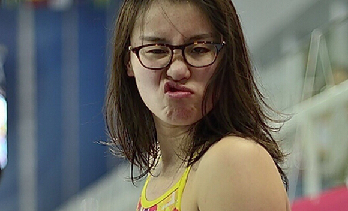
傅园慧应该是中国有史以来最著名的铜牌得主。她在接受中国最重要媒体采访时，无比真实地表达了自己的想法：训练辛苦想要死，自我超越已经很满足，对晋级后的成绩没有期待。这是对传统文化里“成王败寇”思维的一个巨大挑战，也是对过去“为集体争光”思维的巨大挑战。
我看到了表情包会会心一笑，听了她的段子也会哈哈大笑，但真正让我真正欣慰和高兴的，是这一辈的中国人将开始真正地“为自己而活”。
体育成绩一直是一个民族身体素质和一个国家综合实力的体现，所以过去我们一直为运动员带着“为国夺金”的沉重枷锁。但在近几年大众的认知在不知不觉间有了巨大的变化：从当年那个不听话的王治郅到后来的世界巨星姚明，从李娜刚出来单干时的尴尬到后来正面肯定她为东亚人在网坛争取到的荣誉，从刘翔退赛得到的谩骂到孙杨失金后得到的力挺。我记得2012年伦敦奥运会时我们还在因为奖牌榜和金牌榜跟人较劲，但今年的奥运几乎是一面倒地对“唯金论”的抨击。
不要小看这个变化，这是新一代中国人在三十多年改革开放积累的“经济基础”上建立的“上层建筑”。渐渐打破了的思想枷锁就意味着思想的解放，进而带来价值的解放、人生的解放和社会的解放。这种解放的结果就是我们梦寐以求的“多元开明、民主独立”的社会。
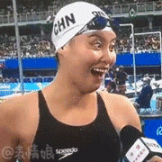 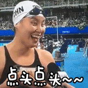
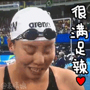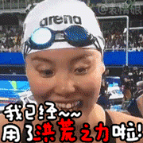
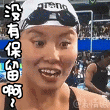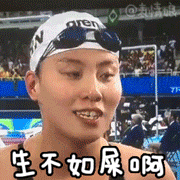
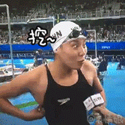
这些都来自于新一代中国人的成长，他们让我们的社会开始有了自下而上的，由一个个傅园慧这样的明星和一个个力挺她的观众撑起来的“独立、开明、多元”的民主思想内核。
这一切的形成将会是一个漫长的过程，需要新的一辈中国人勇敢地打破传统打破常规。这些年轻人会面临来自他们父母、长辈、老师和老派的媒体的指责甚至谴责，但这个过程却是不可逆转的。
我似乎看到了一个属于我们的启蒙时代在向我们招手。
中国女排时隔12年重返奥运之巅！
逆转巴西战
作者：小小方 2016/9/1 来源：知乎
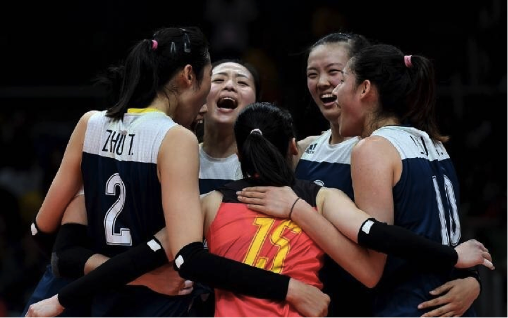
这是奥运会里中国代表团所有项目中目前为止最好看的一场比赛。
也许你不同意，你会说张楠，付海峰的男双1/4决赛逆转也很精彩。
可是精彩的比赛最重要的不就是赛场上表现出来的实力旗鼓相当，打出非常高水平的比赛，最后敢拼敢闯者获胜更来得让人热血沸腾吗？
英国人激动于男子双人三米板英国战胜了无敌的中国队，马来西亚人激动于他们的男双组合打败了世界第一的李龙大，柳延星接着打败中国组合进入决赛。弱者战胜强者永远能得到更多的赞誉，这是属于挑战者的荣誉。
今天中国女排得到了属于自己的挑战者辉煌。中国女排的对手是巴西队，08年，12年奥运会的冠军，8年来中国只赢过对手一次！
中国队B小组第4，输了三场，巴西队A小组第一，一场未失。交叉淘汰赛没有人看好中国，包括今天大肆赞扬的中国媒体也难有一家看好中国女排。
因为巴西队占尽了天时地利人和，整场比赛全场观众嘘了中国队两个多小时，巴西队永远都是夜场压阵，而之前中国队没有打过一次夜场。
在各种不利情况下，中国女排抛下了所有的包袱，充分的发挥了自己所有的实力，同时3:2险胜，紧张，刺激，比赛起起伏伏，这些共同造就了这场伟大的比赛。
看这场比赛紧张，当然，这是淘汰赛，没有退路了。
看这场比赛刺激，中国队逆转，每一分都拼尽了全力。
看这场比赛好看，这是世界上女排最高最高水平的较量，有伟大的对手，有伟大的体育精神。中国女排除了小将龚翔宇没上场，其它全员出动，巴西女排也是人员全出。每支队伍每个人都拼尽了全力。
今天胜利也只是两分，险胜。功臣肯定有世界级的主攻朱婷，没有她中国队就不是世界顶尖水平。功臣还有自由人林莉，今天的防守卡位，每一次的鱼跃救球真的证明了她就是中国队最好的自由人。
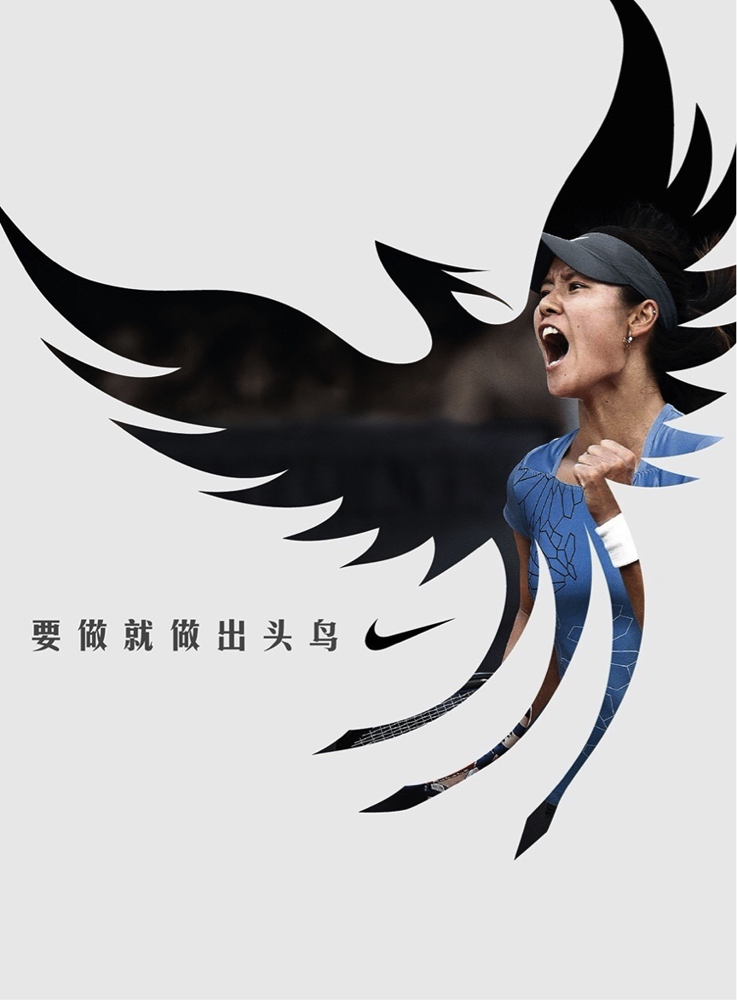
制胜分析
- 刘晓彤，刘晓彤，刘晓彤！
- 郎平！郎平！郎平！
- 感谢巴西女排，因为只有最伟大的对手才能证明你的伟大！
Rio奥运会中国女排精彩瞬间
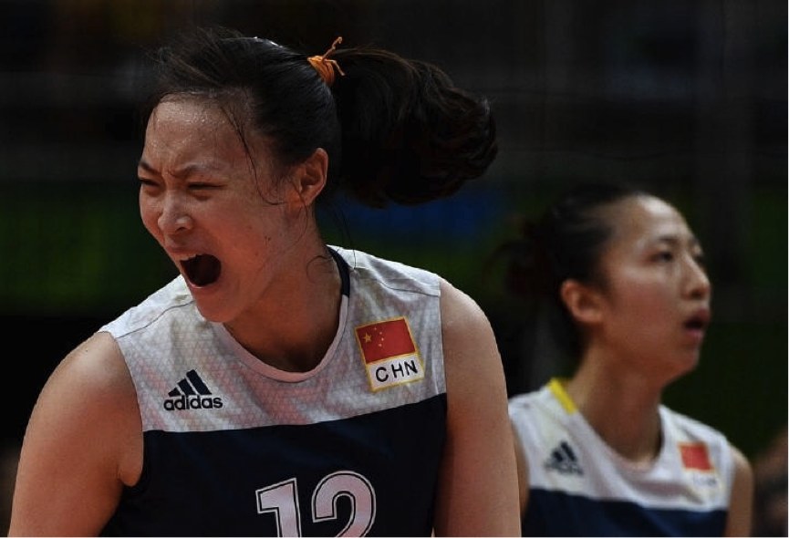
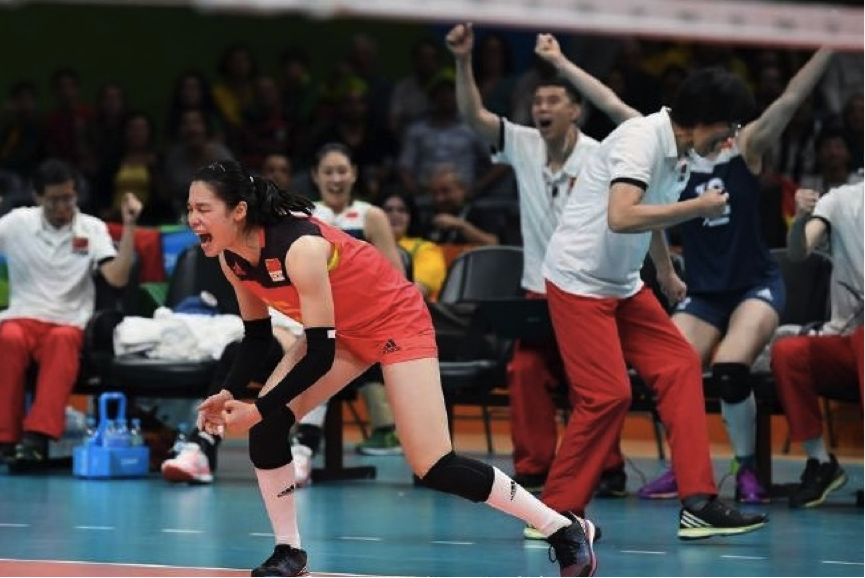
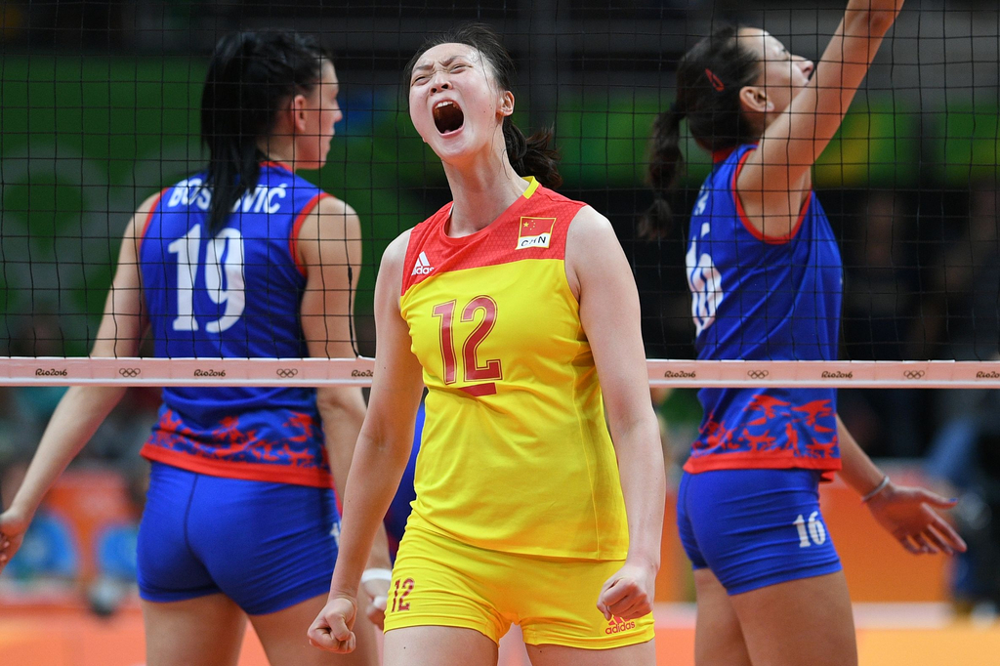
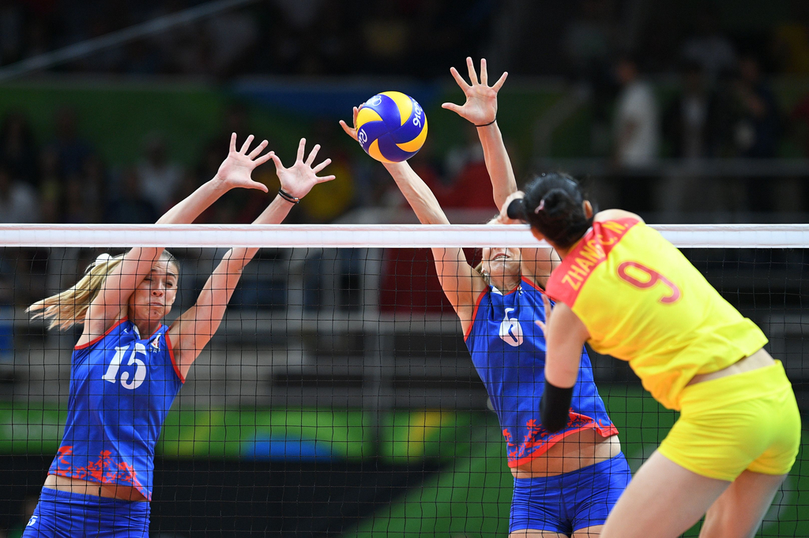
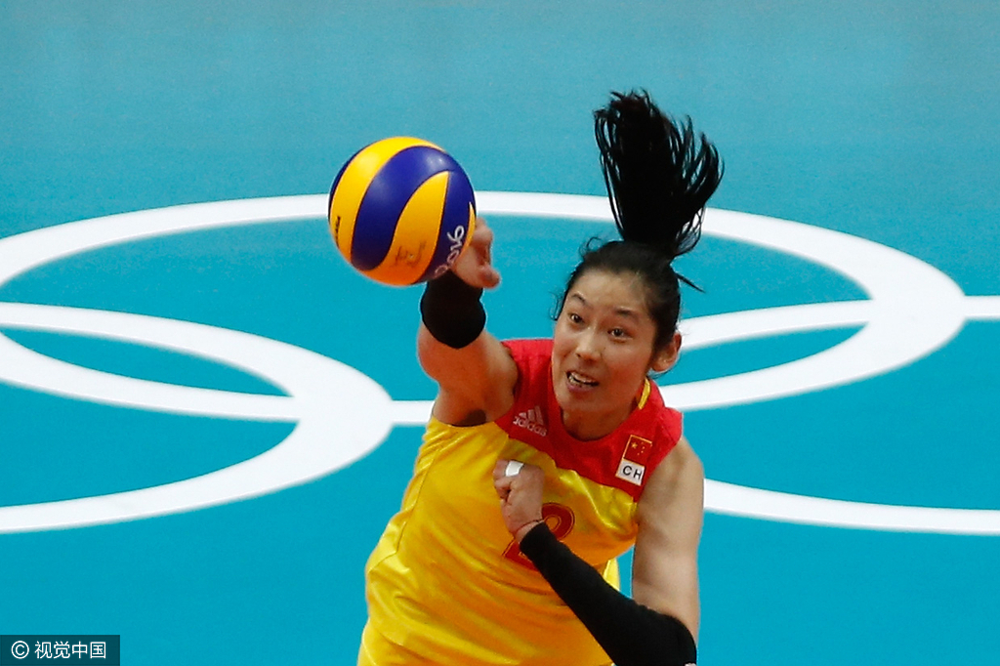
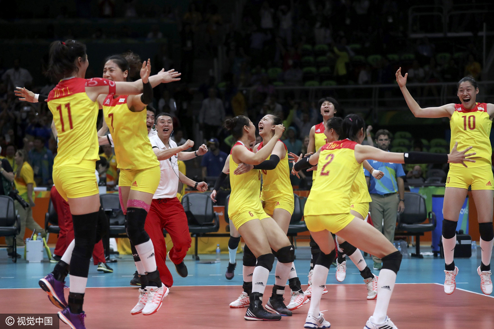